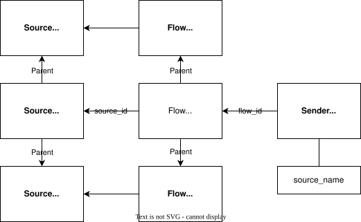
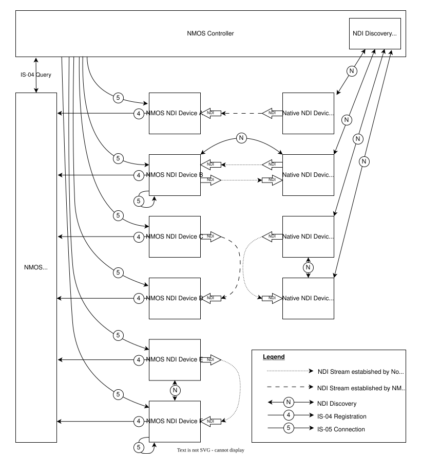
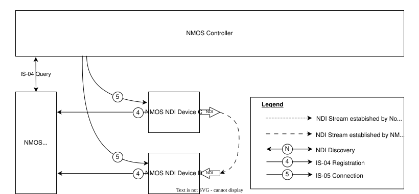
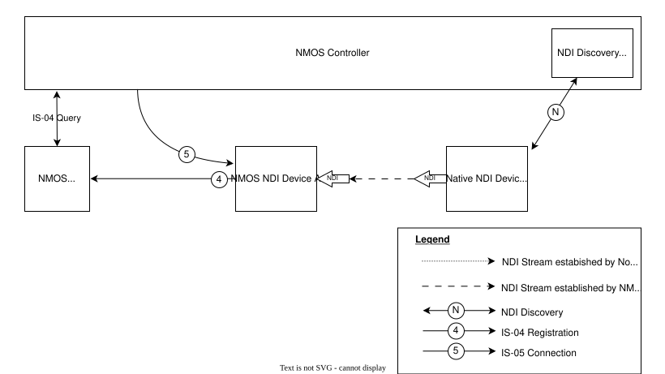
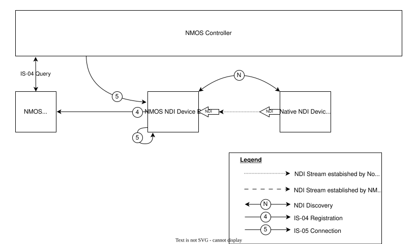
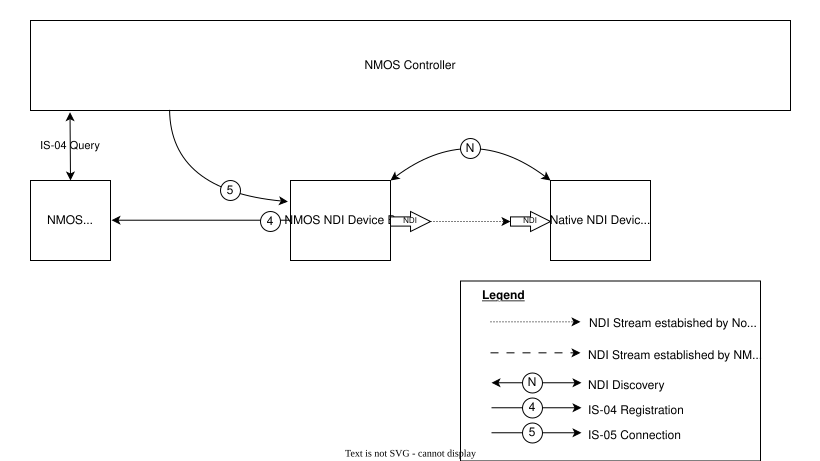
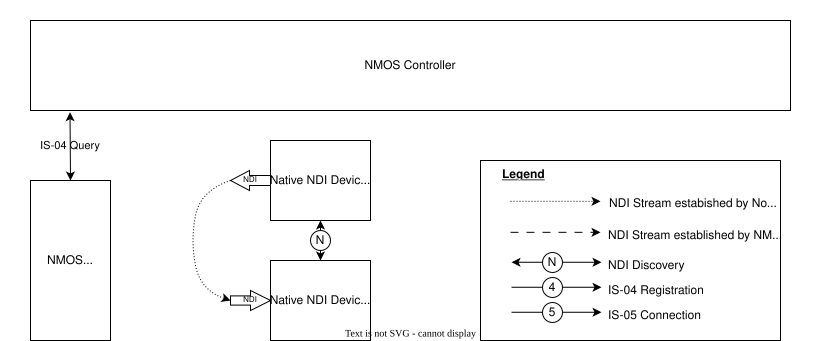
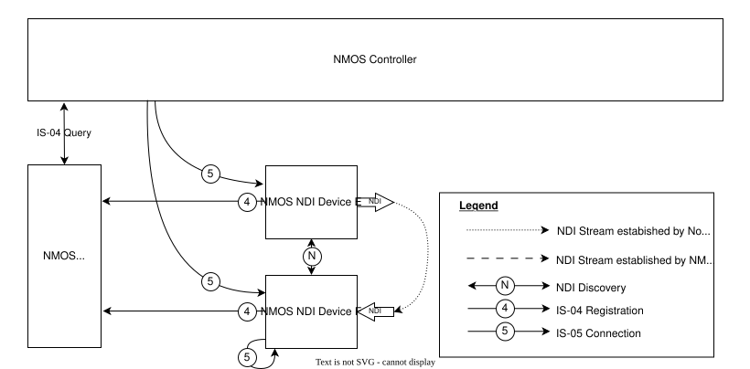

AMWA BCP-007-01: NMOS With NDI
(c) AMWA 2023, CC Attribution-NoDerivatives 4.0 International (CC BY-ND 4.0)
Introduction
NDI (Network Display Interface) is an IP transport and control technology created by Newtek. NDI® is a registered trademark of Vizrt NDI AB. It includes definitions of encoding, transport and provides a full SDK to implement IP media transport. This document outlines how NDI devices can be managed through NMOS IS-04 and IS-05.
Familiarity with the JT-NM Reference Architecture and the NDI® SDK are assumed.
See also the NMOS Technical Overview.
Use of Normative Language
The key words "MUST", "MUST NOT", "REQUIRED", "SHALL", "SHALL NOT", "SHOULD", "SHOULD NOT", "RECOMMENDED", "MAY", and "OPTIONAL" in this document are to be interpreted as described in RFC-2119.
Dependencies
This document was written based upon NDI® Advanced SDK Version 5.5, however devices which implement other versions of the SDK could also be supported.
This document depends upon the following reference documents:
- NMOS IS-04 - Discovery and Registration
- NMOS IS-05 - Device Connection Management
- NMOS BCP-004-01 - Receiver Capabilities
- NMOS BCP-006-02 - NMOS with H.264
- NMOS BCP-006-03 - NMOS with H.265
Definitions
The NMOS terms ‘Controller’, ‘Node’, ‘Source’, ‘Flow’, ‘Sender’, ‘Receiver’ are used as defined in the NMOS Glossary.
This specification also defines the following terms:
NDI SDK
The NDI Software Development Kit (SDK) is offered in two variants. The base version is referred to here as NDI Standard SDK, The Advanced SDK is be referred to here as NDI Advanced SDK. References to NDI SDK apply to both NDI Standard SDK and NDI Advanced SDK.
Native NDI Device
A “device” as defined in the NDI SDK. This is not the same as a “Device” as defined in the NMOS Glossary. Note that the same apparatus could simultaneously act as an NMOS Device and a Native NDI Device.
Non-NMOS NDI Device
A Native NDI Device which does not support the NMOS specifications.
NDI Stream
A "stream" as defined in the NDI SDK. An NDI Stream is a multiplexed structure that could include one or more video, audio and metadata flows.
Native NDI Sender
A "sender" of an NDI stream as defined in the NDI SDK. This is not the same as a “Sender” as defined in the NMOS Glossary. Note that the same apparatus could simultaneously act as an NMOS Sender and a Native NDI Sender.
Native NDI Receiver
A "receiver" of an NDI stream as defined in the NDI SDK. This is not the same as a “Receiver” as defined in the NMOS Glossary. Note that the same apparatus could simultaneously act as an NMOS Receiver and a Native NDI Receiver.
NDI Device
A Native NDI Device which implements IS-04 and allows registration in an NMOS Registry and implements IS-05 for connection management.
NDI Sender
An NMOS Sender which implements the NDI transport.
NDI Receiver
An NMOS Receiver which implements the NDI transport.
NDI High Bandwidth
An NDI stream which utilizes proprietary codecs for audio and video. NDI High Bandwidth is supported by both the NDI Standard SDK and NDI Advanced SDK.
NDI HX, NDI HX2, NDI HX3
NDI High Efficiency profiles, named NDI HX, NDI HX2, and NDI HX3, utilize H.264/AVC, H.265/HEVC, AAC and Opus codecs. These are supported by the NDI Advanced SDK only.
NDI HX utilizes Long-GOP H.264 video encoding at maximum Full HD resolution and AAC audio encoding. NDI HX is sometimes stylized NDI|HX in some documentation.
NDI HX2 utilizes H.264 or H.265 Long-GOP video coding up to UHD resolution and AAC or Opus audio encoding. NDI HX2 is sometimes stylized NDI|HX2 in some documentation.
NDI HX3 utilizes H.264 or H.265 Short-GOP video coding up to UHD resolution and AAC or Opus audio encoding. NDI HX3 is sometimes stylized NDI|HX3 in some documentation.
NDI
This document uses the term "NDI" when referring to all NDI variants, and specify "NDI High Bandwidth", "NDI HX", "NDI HX2", or "NDI HX3" where the text applies to specific NDI variants.
Native NDI Model
NDI Streams utilize a variety of codecs to compress media. In many cases, the NDI SDK negotiates between Native NDI Devices to select the transport and encoding parameters used for an NDI Stream. A Native NDI Receiver does not learn about the encoding and transport parameters of an NDI Stream until a connection is established.
The NDI SDK, by default, automatically selects and negotiates encoding parameters between Native NDI Devices. Media content enters the Native NDI Sender as raw, uncompressed media and raw, uncompressed media emerges from Native NDI Receivers.
The NDI Advanced SDK supports compressed NDI Streams utilizing H.264, H.265, AAC and Opus codecs. Media content enters the Native NDI Sender as compressed media and compressed media emerges from Native NDI Receivers.
NDI Metadata
Metadata connections can be implicitly established by the NDI SDK when video connections are established. In some cases, bi-directional metadata connections can be established by the NDI SDK between the Native NDI Sender and Native NDI Receiver. In such cases, NDI Metadata is not represented explicitly in NMOS.
NMOS-NDI Model
Native NDI Devices, Native NDI Receivers and Native NDI Senders are represented by NMOS Devices/Nodes, Receivers and Senders respectively.
A controller which supports NDI connection management via IS-05 MUST support connection of NDI Receivers to NDI Senders. This controller MAY also support connection of NDI Receivers to Native NDI senders, however the discovery of such senders is outside the scope of this document.
Non-NMOS Connections to NDI Devices
If an NDI Stream is connected to an NDI Receiver outside of IS-05, the transport parameters of the Connection API of the Receiver MUST be updated to reflect the running parameters which have been set via the alternate protocol. The Receiver MUST update its IS-04 resource subscription.active property accordingly, set subscription.sender_id to null and increment it's version number. If the resource has been registered with an NMOS registry the entry MUST be updated to match the Node API.
Multiplexed Flow Model
Receivers of NDI Streams MUST have the format attribute set to urn:x-nmos:format:mux and Senders of NDI Streams MUST be associated with a Flow having the format attribute set to urn:x-nmos:format:mux, as NDI connections could contain multiple essences including video, audio and metadata.
A Flow of urn:x-nmos:format:mux format MUST have parents video or audio sub-Flows. The current NDI SDK limits to a maximum of one of each video, audio and metadata sub-Flow, but this specification supports future SDK versions which could support multiple audio, video or metadata sub-Flows.

NDI IS-04 Resources
Flows
MUX Flow
An NDI Sender MUST be associated with a mux Flow having the format attribute set to urn:x-nmos:format:mux and the media_type attribute set to application/ndi.
The mux Flow MUST have parent video and/or audio sub-Flows identifying the sub-Flows multiplexed in the NDI Stream. The mux Flow MUST be associated with a Source of format urn:x-nmos:format:mux.
Video sub-Flows
For NDI High Bandwidth the video sub-Flows media_type attribute MUST be video/raw.
For NDI HX, HX2 and HX3 the video sub-Flows media_type attribute MUST be video/H264 or video/H265.
NDI Senders SHOULD map the employed NDIlib_FourCC_video_type to the NMOS bit-depth, component and sub-sampling properties.
NDI video+alpha video flows MUST be modeled as a single video sub-Flow, including a channel labelled A in the components parameters for the alpha channel.
Audio sub-Flows
For NDI High Bandwidth the audio sub-Flows media_type SHOULD be a supported PCM type such as audio/L16, audio/L20, or audio/L24.
For NDI HX, HX2 and HX3 the audio sub-Flows media_type attribute MUST be audio/mpeg4-generic or audio/opus.
Sources
The Source associated with a mux Flow MUST have its format attribute set to urn:x-nmos:format:mux and its parents attribute MUST enumerate the Sources associated with the sub-Flows.
Senders
NDI Senders do not utilize SDP to describe the NDI Stream; therefore NDI Senders MUST have their manifest_href attribute set to null.
NDI Senders MUST have their transport attribute set to urn:x-nmos:transport:ndi.
NDI Senders MUST be associated with a mux Flow.
NDI Group Tags
NDI Senders MUST specify the NDI groups, through use of tags. NDI group tag MUST use the URN urn:x-nmos:tag:transport:ndi:group. The NDI group tag could have multiple values to represent multiple NDI groups, for example:
"tags": {
"urn:x-nmos:tag:transport:ndi:group": [
"Cameras",
"Studio-A"
]
}
Receivers
The NDI Receiver MUST have its format attribute set to urn:x-nmos:format:mux.
Receiver Capabilities
An NDI Receiver MUST specify as a minimum the following capabilities:
"caps" : {
"media_types" : [
"application/ndi"
]
}
NDI IS-05 Resources
Transport Type
The IS-05 transport for NDI is urn:x-nmos:transport:ndi.
Sender transport_file
Not used.
Sender Transport Parameters
The IS-05 schemas sender_transport_params_ndi.json and constraints_schema_sender_ndi.json describe the transport parameters associated with the NDI transport.
[
{
"machine_name": "ndi-machine-name",
"source_name": "ndi-sender-unique-name",
"source_url" : "...",
"source_ip" : "10.10.10.123",
"source_port" : "5906"
}
]
NDI Senders MUST specify machine_name and source_name in the Sender transport_params. Senders MAY also specify source_url, source_ip and source_port.
machine_name
The device name of the Native NDI Sender as utilized by the NDI SDK. The Sender MUST specify the machine_name. Senders MUST constrain this parameter with appropriate values. Controllers updating this parameter MUST specify a machine_name which is in the Sender contraints or auto to allow the Sender to determine the machine_name.
Informative note: If a Sender does not wish a controller to change the
machine_name, the constraint set would contain the current NDI device name andautoonly.
source_name
The name of the Native NDI Sender stream in the NDI domain. This property MUST NOT be concatenated with machine_name in the format machine_name (source_name). The Sender MUST specify the source_name.
A controller MAY modify this parameter within the supported constraints of the Sender.
Informative note: In the NDI domain, the
source_nameandmachine_nameare concatenated in the formatmachine_name (source_name)when streams are discovered and connected, however in thetransport_params, these properties are kept independent.
source_url
The URL of the Native NDI Sender as utilized by the NDI SDK. The contents are proprietary to the NDI SDK and interpretation is not recommended. If unspecified, it MUST be set to null. Senders MUST constrain this parameter with appropriate values.
Controllers updating this parameter MUST specify a source_url which is in the Sender contraints or auto to allow the Sender to determine the source_url.
source_ip
The IP address that the sender is utilizing for the stream. If a sender or controller specifies the source_ip it MUST also specify source_port.
Controllers updating this parameter MUST specify a source_ip which is in the Sender contraints or auto to allow the Sender to determine the source_ip.
source_port
The port number that the sender is utilizing for the stream. If a sender or controller specifies the source_port it MUST also specify source_ip.
Controllers updating this parameter MUST specify a source_port which is in the Sender contraints or auto to allow the Sender to determine the source_port.
Receiver Parameters
The IS-05 schemas receiver_transport_params_ndi.json and constraints_schema_receiver_ndi.json describe the transport parameters associated with the NDI transport.
[
{
"machine_name": "ndi-machine-name",
"source_name": "ndi-sender-unique-name",
"source_url" : "...",
"source_ip" : "10.10.10.123",
"source_port" : "5906",
"interface_ip" : "10.10.10.2"
}
]
machine_name and source_name in the Receiver transport_params. Receivers MAY also support source_url, source_ip , source_port and interface_ip.
machine_name
The device name of the Native NDI Sender that is to be connected, as utilized by the NDI SDK.
A controller MUST specify machine_name when making a connection.
source_name
The name of the Native NDI Sender stream in the NDI domain that is to be connected. This property MUST NOT be concatenated with machine_name in the format machine_name (source_name).
A controller MUST specify source_name when making a connection.
Informative notes: In the NDI domain, the
source_nameandmachine_nameare concatenated in the formatmachine_name (source_name)when streams are discovered and connected, however in thetransport_params, these properties are kept independent.
source_url
The URL of the NDI Native Sender as utilized by the NDI SDK. The contents are proprietary to the NDI SDK and SHOULD NOT be interpreted.
If supported by the Receiver, a controller MAY specify source_url when making a connection if it is known, otherwise the controller MUST set it to null.
source_ip
The IP address that the sender is utilizing for the stream. If a receiver or controller specifies the source_ip it MUST also specify source_port.
If supported by the Receiver, a controller SHOULD specify source_ip when making a connection if it is known, otherwise the controller MUST set it to null.
source_port
The port number that the sender is utilizing for the stream. If a receiver or controller specifies the source_port it MUST also specify source_ip.
If supported by the Receiver, a controller SHOULD specify source_port when making a connection if it is known, otherwise the controller MUST set it to null.
interface_ip
IP address of the network interface the receiver SHOULD use. The receiver SHOULD provide an enum in the constraints endpoint, which contain the available interface addresses. If set to auto the receiver MUST determine which interface to use for itself.
Controllers
A controller MUST be able to discover NDI Senders and NDI Receivers by using the query API.
A controller MUST be able to connect an NDI Receiver to an NDI Sender by using the IS-05 API. See example Use Case 1.
A controller MAY be able to discover Native NDI Senders.
A controller MAY be able to connect an NDI Receiver to a Native NDI Sender by using the IS-05 API. See example Use Case 2.
Use Case Scenarios (Informative)
Use cases are informative only and provided as examples.

Use Case 1: NDI Sender to NDI Receiver - IS-05 Connection

- Controller is informed of sender (device C) through IS-04.
- Controller is informed of receiver (device D) through IS-04.
- Controller initiates connection to receiver (device D) from sender (device C) via IS-05.
- NDI Receiver (device D) reports its connections status and transport parameters as outlined in IS-04 and IS-05.
Use Case 2: Native NDI Sender to NDI Receiver - IS-05 Connection

- Controller is informed of sender (device W) by its own means; this could be via NDI discovery.
- Controller is informed of receiver (device A) through IS-04.
- Controller initiates connection to receiver (device A) from sender (device W) via IS-05.
- NDI Receiver (device A) reports its connections status and transport parameters as outlined in IS-04 and IS-05.
Use Case 3: Native NDI Sender to NDI Receiver - Non-NMOS Connection

- NDI Receiver (device B) is informed of Native NDI Sender (device X) by its own means; this could be via NDI discovery.
- NDI Receiver (device B) initiates connection to Native NDI Sender (device X) directly via NDI SDK.
- NDI Receiver updates its IS-04
activestate, sets thesender_idtonull, increments the version number. - The controller does not initiate the connection, but can monitor the connection status via IS-04 and IS-05.
Use Case 4: NDI Sender to Native NDI Receiver - Non-NMOS Connection

- In this scenario, it is assumed the NDI Sender is active.
- Native NDI Receiver (device X) is informed of NDI Sender (device B) by its own means; this could be via NDI discovery.
- Native NDI Receiver (device X) initiates connection to NDI Sender (device B) directly via NDI SDK.
- The controller does not initiate the connection and cannot monitor the state of the connection.
Use Case 5: Native NDI Sender to Native NDI Receiver - Non-NMOS Connection

- This scenario exists outside the realm of NMOS. The controller might not be aware of these devices, and does not initiate any connection between them.
- Native NDI Receiver (device Z) and Native NDI Sender (device Y) discover through their own means; this could be via NDI discovery.
- Connection from Native NDI Sender (device Y) to Native NDI Receiver (device Z) is performed by the NDI SDK.
Use Case 6: NDI Sender to NDI Receiver - Non-NMOS Connection

- In this scenario, it is assumed the NDI Sender is active.
- In this scenario, both sender (device E) and receiver (device F) are NMOS devices, but connection is established outside of IS-05.
- NDI Receiver (device E) and NDI Sender (device F) discover through their own means; this could be via NDI discovery.
- Connection from NDI Sender (device E) to NDI Receiver (device F) is performed by the NDI SDK.
- NDI Receiver updates its IS-04
activestate, sets thesender_idtonull, increments the version number. - The controller does not initiate the connection, but can monitor the connection status via IS-04 and IS-05.